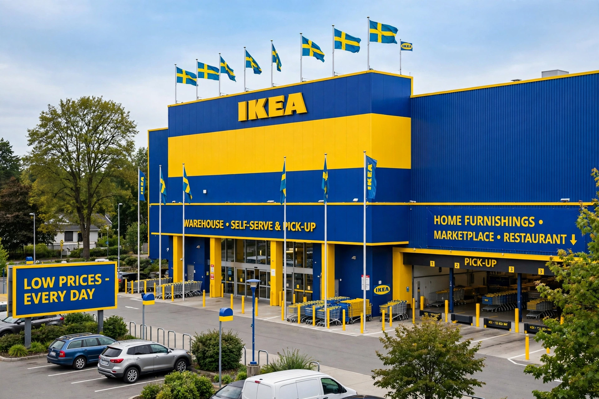

IKEA

Image: a blue-and-yellow IKEA warehouse store exterior with flags, and a BILLY bookcase flat-pack box | |
| Type | Private (foundation-owned holding structure) |
|---|---|
| Industry | Retail, furniture |
| Founded | 28 July 1943; Älmhult, Sweden |
| Founder | Ingvar Kamprad |
| Headquarters | Delft, Netherlands (Inter IKEA); Leiden (INGKA) |
| Area served | 60+ markets worldwide |
| Products | Ready-to-assemble furniture, homeware, food |
| Revenue | ~€48 billion retail sales (approx., FY2023) |
| Employees | ~230,000 (approx., across the IKEA system) |
| Website | ikea.com |
IKEA is a Swedish-founded multinational conglomerate that designs and sells ready-to-assemble furniture, kitchen appliances, decoration and home accessories. Founded in 1943 by 17-year-old Ingvar Kamprad, it has been the world's largest furniture retailer since 2008. The name is an acronym of the founder's initials, his family farm Elmtaryd, and his home village Agunnaryd.
History and business model
IKEA began as a mail-order business and opened its first store in Älmhult in 1958. Its model rests on "democratic design": stylish, functional products at low prices, achieved through flat-pack self-assembly, warehouse-style stores with a one-way showroom layout, and relentless cost engineering. The first store outside Sweden opened in Norway in 1963, and expansion across Europe, North America and Asia followed; the blue-and-yellow stores with Swedish restaurants serving meatballs became a global retail phenomenon.
Products and culture
Bestsellers include the BILLY bookcase, POÄNG chair, LACK tables and KALLAX shelving. Products bear Swedish names assigned by category (chairs get men's names, fabrics women's, and so on). The annual catalogue, long one of the world's most-printed publications, was discontinued in 2021 in favour of digital media.
Corporate structure and criticism
The IKEA brand and concept are owned by Inter IKEA Systems, part of a foundation-centred structure long criticised as opaque and tax-efficient. The company has faced criticism over timber sourcing and assembly-product safety recalls, and has committed to circular-economy and climate goals, including buy-back schemes and renewable materials.